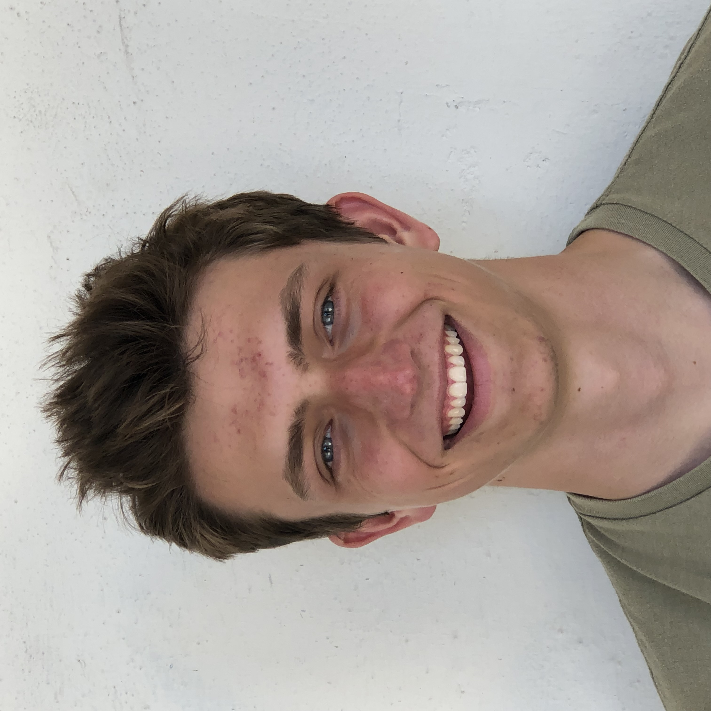

| Introduction | Career Summary | Education and Qualifications | Hobbies and Interests |
Hello, my name is Aidan Kaiser. I am a fourth year at Gonzaga University studying Computer Science. I am interested in Data Science and machine learning as well as web development. I am eager to continue to learn new strategies and techniques while working on projects with small or large teams. Outside of school, I enjoy exploring the country by hiking, kayaking or driving. Any day where I can get out of the house is a good day!
